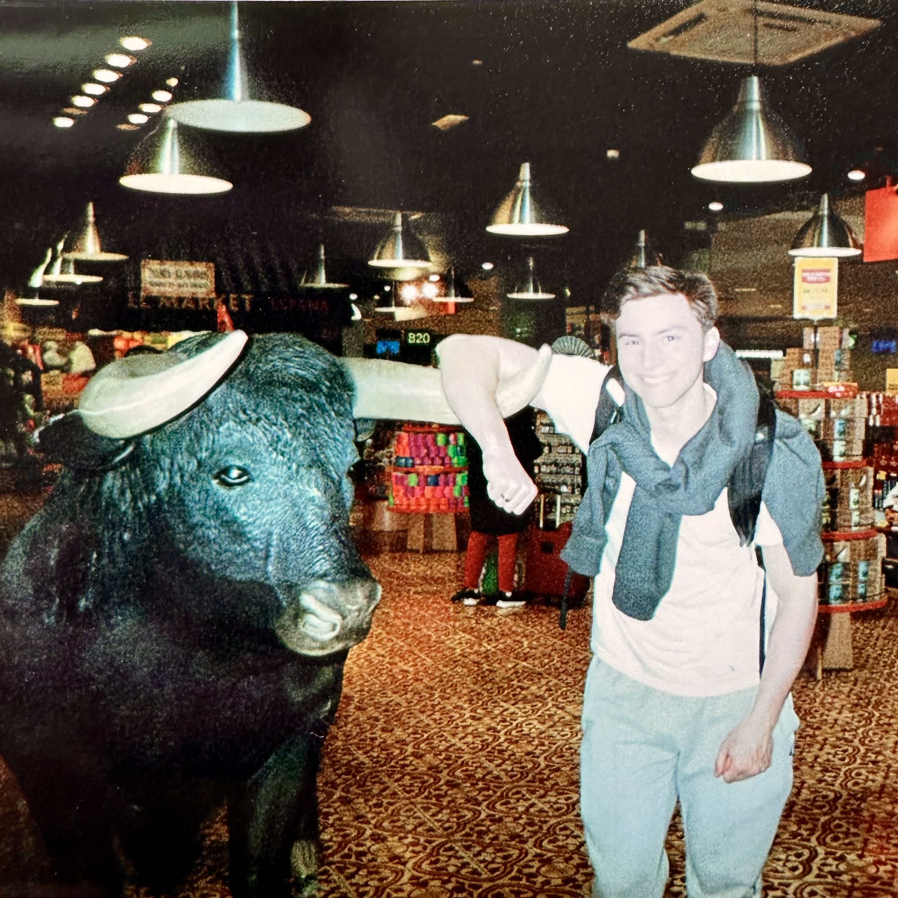

About
Welcome to my website! I'm a Cadet at West Point majoring in Electrical Engineering, with an interest in cybersecurity.
I also enjoy astronomy, weightlifting, and making digital music.
This website will mostly be for posting new projects I am working on that are tech, electronics, or cyber related.
Click my email below to reach out about business / professional inquiries.